Home Project Team M1 M2 M3 M4 Project
M2: Proposal + Lo-Fi Prototyping - May 5+7
Dokumentation:
Tasks & OwnershipUser:
Matthew - A CityBike-Employee utilizing this Implementation is most likely a TeamLead/Manager in the logistics.
Goal:
Enabling CityBike Employees to forecast and plan ahead by providing them with an interactive and adjustable tool visualizing historic trends and usage. Aiding users to predict the usage for a future time period but also allowing them to adjust certain parameters changing the automatically generated prediction.
Scenario:
Matthew works at CityBike Vienna and is in charge of logistics. This means he takes care of managing the CityBike stations by refilling them with bikes when needed, picking up broken bikes or relocating bikes.Matthew faces daily challenges ensuring the stations are full and enough working bikes are available. Today Matt wants to plan ahead and forecast next weekends (Filter Tag, Woche, Monat, Wochenende etc) usage. Vienna isn’t as big as Paris but still has 120 Stations. To narrow down his options he decides to focus on the 2nd district first (Filter für Bezirke). There are 12 stations (Filter für Stationen) and since it is in the heart of the touristic area he takes all stations into consideration. Matt is now able to see a calculated prediction for the selected timeframe, district and stations. It shows him a number of bikes which could possibly be rented. The toli also allows him to select a specific day and see the usage throughout it (Rushour etc).
After reviewing the data Matt is interested to see what last weekend looked like for his selected criteria. He modifies the selected weekend and now sees the prediction generated for that historic time frame vs the actual usage. The usage was higher than predicted and Matthew now fears the same thing could happen again this weekend. He now decides to set new Parameters for the prediction. He edits the historic prediction so it is accurate, saves these and applies the increase on his future prediction for next weekend. The initial search results have now been modified and shows the changes.
Matt is happy with this forecast and begins to plan the needed bikes and staff for the 2nd district next weekend.
Mockup A
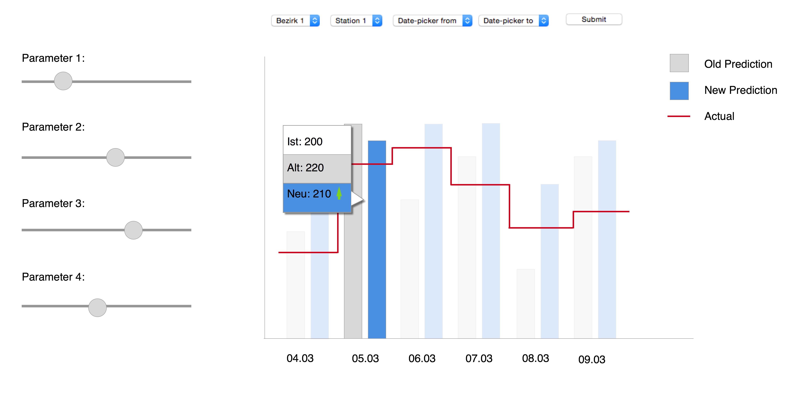
This diagram allows the user to interactively optimize the prediction formula. On the top filters like district or a certain time frame can be applied On the left parameters of the formula can be edited. The barchart shows:- (if available) the actual number of users (red line)
- The old predicted values (grey bars)
- The current predictions (blue bars)
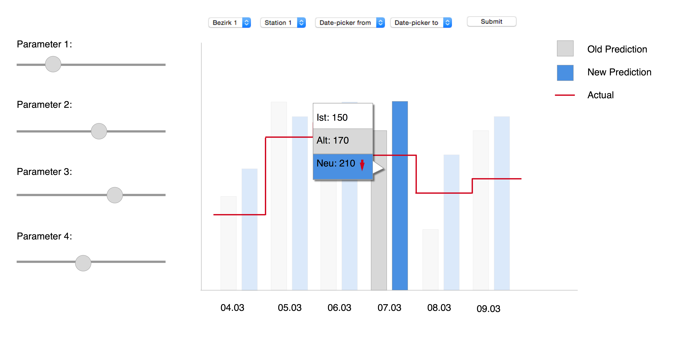
The goal is to as closely as possible approximate the red line. After changes are made to the parameters the grey bars display the formula with the parameters before the changes were applied. The blue bars show the formula with the actual parameters. This allows the user to see how changing one parameter of the formula impacts the prediction.Mockup B
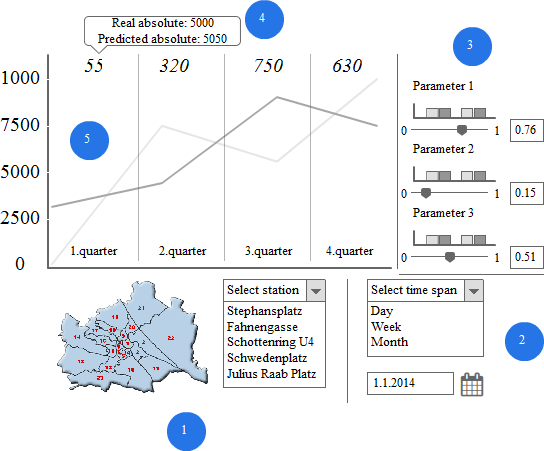
Mockup B is a line diagram.
- shows the filter for the stations. You can filter the main view by district if you click on a district. If you selected a district the dropdown menu changes. If a specific station is selected the main view also changes.
- shows the filter for the time. You can change between the day, week and month view. You can also change the date for the specific view. The selection has an impact on the main view.
- shows the parameter that change the formula. You can edit each parameter by the slider or the field. The changes are shown in the field. The barchart over the slider show where the formula is better or worse.
- is an area of the main view. On the top of each area you can see the absliute difference between the predicted line and the real data. If you hover over the number you can see the absliute numbers for the predicted data and the real data.
- is the main line diagram view.

This picture shows how the map changes (#1) if a district is selected.
Mockup C - Detailed Description
User: Matt, in charge of the logistics for CityBike Vienna. We assume he knows the stations by their number. Furthermore, we assume that he is familiar with Vienna's geography (he can orient on a map of Vienna). Task: Matt needs a prediction for the amount of damaged bikes for all of the city bike stations in the second district for the upcoming weekends . Here is a step-by-step description for Matt in order to complete his task. a. Area Selection - Districts: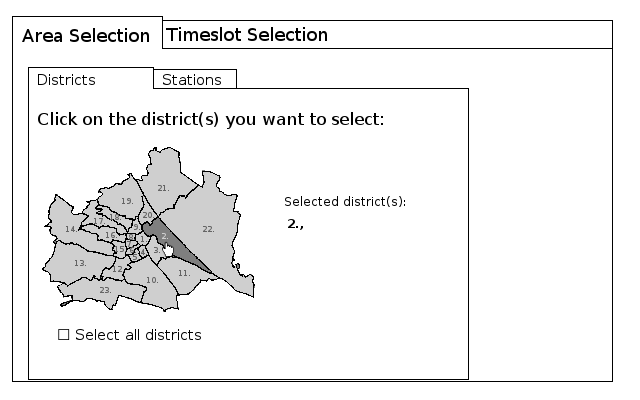
First, you will specify the area to which the prediction should be applied, starting with the district or districts. Clicking on a district will add this district to your list of selected districts. You may click on as many districts as you like, as long as you choose at least one. Clicking on a selected district again will delete the district from the list of selected districts. There is also a shortcut for selecting all districts at once. Tip: If you choose more than 12 districts, it might be faster to pre-select all of them, and then just delete the districts you don't wish to include. b. Area Selection - Stations: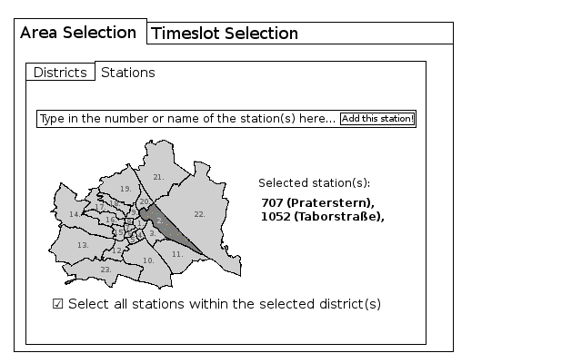
Next, you will specify the stations within the selected districts to which the prediction should be applied. You may type in the name or the number of the station. You could also zoom in into the map and click on the stations. However, for your task, it might be more useful to use the shortcut in order to select all stations. c. Timeslot Selection: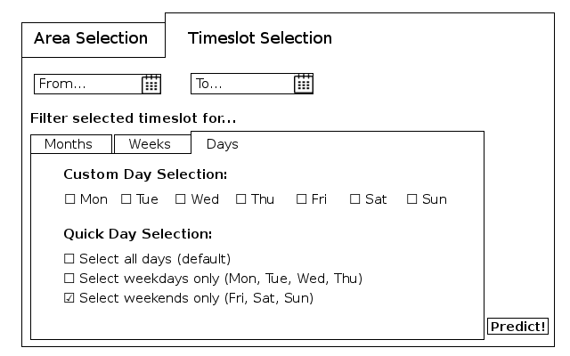
Here, you determine the time slot for which you want your prediction to be made. First of all, you select a starting date (From...) and an ending date (To...). Now, you can apply filters to this pre-selected timeslot. You won't have to specify months or weeks, since you want to filter for weekdays. So you can directly click on 'Days' and use the Quick Selection for weekends. That's it, you may now hit 'Predict!' (a button which pops up as soon as you have specified enough filters in order to run a predition). d. Your result: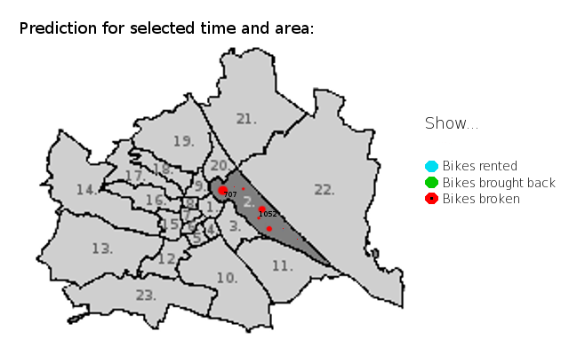
And here is your prediction. The size of the cirlces indicates the amount of bikes, and the color specifies their state (rented, brought back, or broken). Click on the cirlces (which also show the color code) in order to change the state shown. =======Implementation details
For our implementation, we will most probably be using the JavaScript D3 and/or Chart.js libraries. For the design, we might use the Bootstrap CSS Framework. These choices are however not intended to be exhaustive or final.Discussion Points
- Which Mockup do you all think is most suitable for the solution we are trying to visualize?
- What else would you like to see in the tool if you were a CityBike Employee such as Matthew?
- Are there other ways you would have opted to display the data?
- Other Questions?
References:
Appendix
Additional images to Mockup A: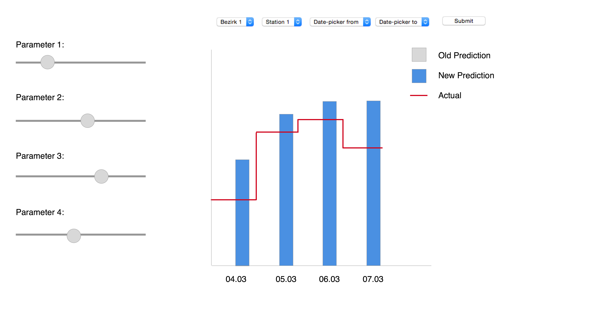
Image displaying prediction with actuals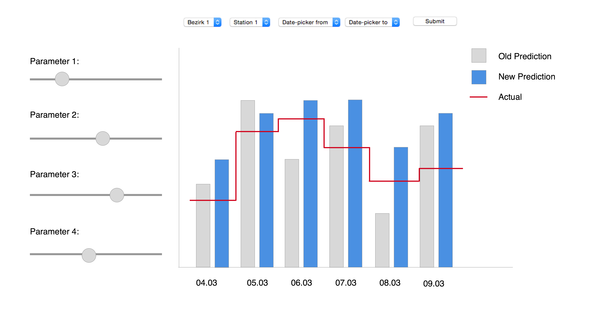
Image showing historic prediction vs actual data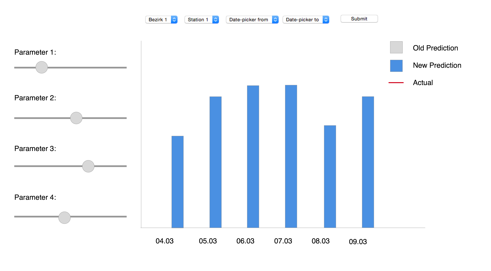
Image displaying future predictionAdditional images to Mockup B:
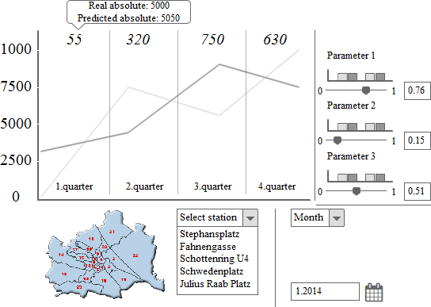
This picture shows how the main view changes when you select 'month' (#2) as a time span.
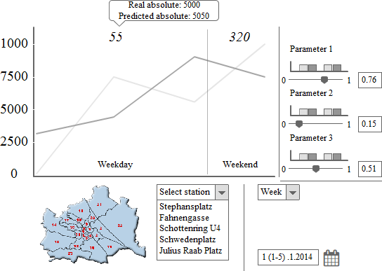
This picture shows how the main view changes when you select 'week' (#2) as a time span.
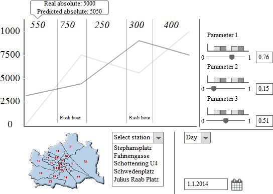
This picture shows how the main view changes when you select 'day' (#2) as a time span.